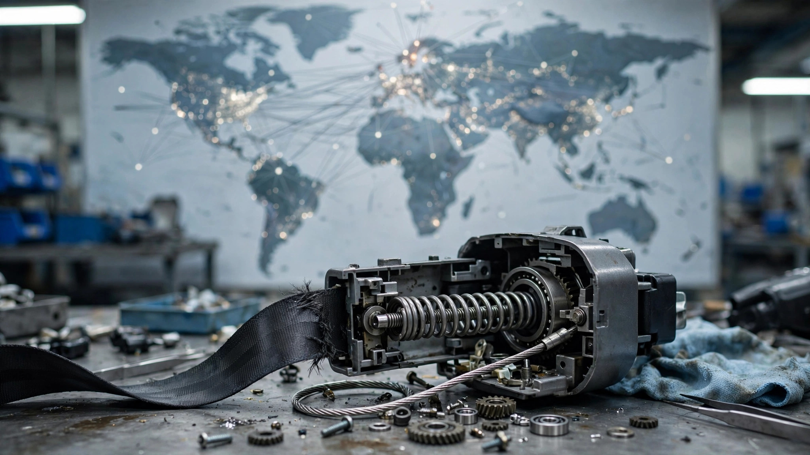

One Company Supplies 44% of All Automotive Safety. Nobody Tracks Its Recalls.

Search NHTSA's recall database for "Autoliv" and you get nothing useful. Not because the world's largest automotive safety supplier hasn't had problems. Because NHTSA indexes recalls by automaker, not by the company that actually made the part.
Autoliv is a $10.4-billion Swedish company with 44% of the global automotive safety market. It makes seat belts, airbags, and steering wheels for every major automaker on Earth. When something goes wrong at Autoliv, it doesn't show up once. It shows up everywhere, at different automakers, on different timelines, filed under different names in NHTSA's system.
The big one landed in 2020, when Volvo recalled 2.18 million vehicles globally because front seat belt steel cables wore down over time, reducing restraining capability.[1] It covered 13 model years of S60, V60, XC60, V70, XC70, and S80 production, making it the largest recall in Volvo's 93-year history. The supplier was Autoliv; so were the replacement parts.
Then in August 2026, Stellantis recalled 48,777 Dodge Hornets and Alfa Romeo Tonales because rear seat belt retractors twist and fail to hold tension.[2] The supplier this time was Autoliv ASP, Inc., out of southeast Michigan, and Stellantis traced the root cause to "a design weakness" that had already generated 484 warranty claims before anyone filed recall paperwork.
Between those two marquee recalls, the pattern kept building quietly. A 2016 Autoliv equipment recall flagged roughly 111,500 seatbelt retractors across multiple automakers after a micro gas generator could detach mid-crash and become a cabin projectile.[3] A 2021 Volvo recall pulled 19,149 vehicles after the same supplier's automatic locking retractors deactivated early, preventing child restraint systems from securing properly.[4] Four different failure modes across three automakers, all traceable to one component manufacturer: cable wear, retractor twist, projectile shrapnel, and child-seat lockout.
That pattern becomes structurally dangerous because NHTSA's database has no supplier field that consumers can search. The 2020 Volvo recall is filed under "Volvo." The 2026 Stellantis recall is filed under "Chrysler (FCA US, LLC)." There is no view, no query, no report that connects them to the same component manufacturer. This is the exact architecture that let the Takata airbag crisis fester for 14 years across 19 automakers and 67 million vehicles before anyone drew the line between them.[5]
The Takata parallel has a limit, though. Those inflators killed people, and none of these Autoliv recalls have reported fatalities. Different failure modes across different facilities may reflect isolated manufacturing problems rather than one systemic rot. And at Autoliv's scale, some recall volume is statistically inevitable.
But the scale defense gets awkward when you add the criminal record. In 2011, Autoliv pled guilty to two felony counts of conspiring to fix prices on seat belts, airbags, and steering wheels sold to U.S. automakers.[6] The DOJ fined them $14.5 million. Prosecutors said the company held secret meetings to "allocate supply" and "fix, stabilize and maintain prices." In 2025, Stellantis tried to sue Autoliv for $807 million in cartel overcharges. A UK tribunal dismissed the case.[7] Months later, Stellantis recalled 48,777 vehicles fitted with Autoliv seat belts that don't retract.
Autoliv's 2024 annual report says its products saved approximately 37,000 lives that year. That claim is almost certainly true at their market share. But it doesn't answer the structural question: when one supplier controls 44% of a safety-critical market, who is watching for patterns across the automakers it serves? Right now, nobody.
Sources & References
- Automotive News, “Volvo will recall 2 million cars globally to fix seat belt issue,” 2020. autonews.com
- USA Today, “48K Dodge, Alfa Romeo vehicles recalled over seat belt issue,” August 10, 2026. usatoday.com
- NHTSA Equipment Recall 16E094000, “Seatbelt Component May Detach and Enter the Cabin,” filed December 15, 2016. 111,500 retractor units across multiple automakers. nhtsa.gov/recalls
- NHTSA Recall 21V682000, Volvo Car USA, “Seat Belt Automatic Locking Retractors May Deactivate Early,” September 2021. 19,149 vehicles. Supplier identified as Autoliv in Part 573 filing. static.nhtsa.gov
- NHTSA, Takata airbag recall information. nhtsa.gov/recalls
- Automotive Fleet, “Auto Safety Systems Supplier Agrees to Plead Guilty to Price Fixing.” automotive-fleet.com
- Financial News / LSE, “Stellantis’ $807 million UK lawsuit over airbag, seatbelt cartels dismissed,” February 2025. lse.co.uk